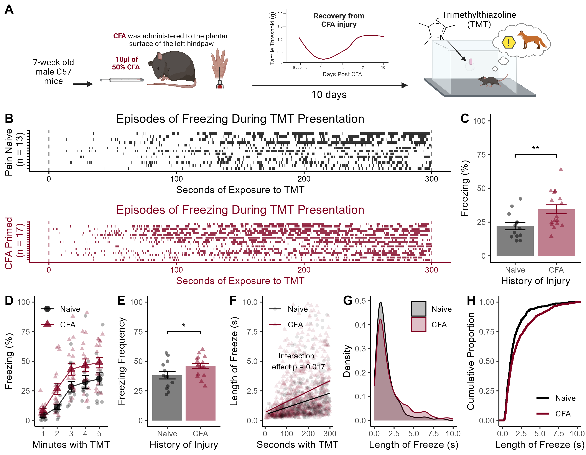

Figure 1

Figure 1. A history of CFA injury enhances TMT-induced freezing behavior. (A) Timeline for behavioral testing: 10 μL of 50% CFA injected into the footpad of the left hind paw was used as a model of injury, which produces a robust pain phenotype that reliably resolves within 7 days post-injection. Ten days after CFA, mice were tested for basal freezing levels and freezing during presentation of the single-molecule odor TMT. (B) Raster plots showing freezing behavior across the five-minute exposure to TMT. (C) CFA-primed mice spent more time freezing than pain-naive controls during TMT exposure. (D) Freezing behavior during each minute of TMT exposure. (E) Number of freezing episodes during TMT. (F) Linear relationship between time spent with TMT and length of freezing episodes. (G) Density plots showing the distribution of individual bouts of freezing compared between naive and CFA-primed mice. (H) Cumulative proportion of bouts of freezing during the TMT session. Data displayed as mean +/- SEM. ** indicates p < 0.01, *** indicates p < 0.001.
Time Spent Freezing During TMT
b <- Exp_1_CFA.N %>%
filter(Behavior == "freeze") %>%
group_by(ID,CFA) %>%
summarise(
sum=sum(Duration),
Number=n(),
) %>%
mutate(Perc = (sum / 300)*100)## `summarise()` has grouped output by 'ID'. You can override using the `.groups`
## argument.##
## Two Sample t-test
##
## data: Perc by CFA
## t = -2.8169, df = 28, p-value = 0.00879
## alternative hypothesis: true difference in means between group Naive and group CFA is not equal to 0
## 95 percent confidence interval:
## -21.59481 -3.41081
## sample estimates:
## mean in group Naive mean in group CFA
## 22.00138 34.50420Across the 5-minute exposure to TMT, mice that had previously experienced CFA spent more time freezing than did pain naive controls (t(28) = 2.82, p = 0.009).
Frequency of Freezing During TMT
##
## Two Sample t-test
##
## data: Number by CFA
## t = -2.0875, df = 28, p-value = 0.04606
## alternative hypothesis: true difference in means between group Naive and group CFA is not equal to 0
## 95 percent confidence interval:
## -15.0432681 -0.1422523
## sample estimates:
## mean in group Naive mean in group CFA
## 38.23077 45.82353Overall, CFA-primed mice froze more frequently than naive mice (t(28) = 2.087, p = 0.046).
Linear relationship between Time With TMT and Length of Freeze
# model the linear relationship between time and length of freeze
b <- lm(Duration~Start_clean * CFA, data=Exp_1_CFA.N)
summary(b)##
## Call:
## lm(formula = Duration ~ Start_clean * CFA, data = Exp_1_CFA.N)
##
## Residuals:
## Min 1Q Median 3Q Max
## -2.7754 -1.0071 -0.5278 0.1559 22.2313
##
## Coefficients:
## Estimate Std. Error t value Pr(>|t|)
## (Intercept) 0.868308 0.158525 5.477 4.87e-08 ***
## Start_clean 0.004963 0.000912 5.442 5.92e-08 ***
## CFACFA -0.065515 0.200135 -0.327 0.7434
## Start_clean:CFACFA 0.002793 0.001165 2.398 0.0166 *
## ---
## Signif. codes: 0 '***' 0.001 '**' 0.01 '*' 0.05 '.' 0.1 ' ' 1
##
## Residual standard error: 2.068 on 1978 degrees of freedom
## (60 observations deleted due to missingness)
## Multiple R-squared: 0.07253, Adjusted R-squared: 0.07113
## F-statistic: 51.56 on 3 and 1978 DF, p-value: < 2.2e-16The significant interaction between time and CFA indicates that the increase in length of freezing episode across the five-minute session differs for Naive and CFA-primed mice (p = 0.01).
Naives <- Exp_1_CFA.N[Exp_1_CFA.N$CFA == "Naive", ]
c <- lm(Duration~Start_clean, data = Naives)
summary(c)##
## Call:
## lm(formula = Duration ~ Start_clean, data = Naives)
##
## Residuals:
## Min 1Q Median 3Q Max
## -1.8727 -0.8969 -0.4920 0.0922 22.2313
##
## Coefficients:
## Estimate Std. Error t value Pr(>|t|)
## (Intercept) 0.8683076 0.1576737 5.507 4.92e-08 ***
## Start_clean 0.0049630 0.0009071 5.471 5.97e-08 ***
## ---
## Signif. codes: 0 '***' 0.001 '**' 0.01 '*' 0.05 '.' 0.1 ' ' 1
##
## Residual standard error: 2.057 on 803 degrees of freedom
## (26 observations deleted due to missingness)
## Multiple R-squared: 0.03594, Adjusted R-squared: 0.03474
## F-statistic: 29.94 on 1 and 803 DF, p-value: 5.967e-08For naive mice, a 1-second increase in time in the apparatus with TMT was associated with a 49.6 ms increase in predicted length of freeze.
CFAs <- Exp_1_CFA.N[Exp_1_CFA.N$CFA == "CFA", ]
d <- lm(Duration~Start_clean, data = CFAs)
summary(d)##
## Call:
## lm(formula = Duration ~ Start_clean, data = CFAs)
##
## Residuals:
## Min 1Q Median 3Q Max
## -2.7754 -1.1509 -0.5655 0.2294 15.8554
##
## Coefficients:
## Estimate Std. Error t value Pr(>|t|)
## (Intercept) 0.8027926 0.1226094 6.548 8.72e-11 ***
## Start_clean 0.0077559 0.0007271 10.667 < 2e-16 ***
## ---
## Signif. codes: 0 '***' 0.001 '**' 0.01 '*' 0.05 '.' 0.1 ' ' 1
##
## Residual standard error: 2.076 on 1175 degrees of freedom
## (34 observations deleted due to missingness)
## Multiple R-squared: 0.08829, Adjusted R-squared: 0.08751
## F-statistic: 113.8 on 1 and 1175 DF, p-value: < 2.2e-16For CFA-primed mice, a 1-second increase in time spent with TMT was associated with a 77.56 ms increase in predicted length of freeze.
- The predicted second-by-second increase in freezing time was 56% greater than the predicted change for naive mice.
Percent Freezing Split by Minute With TMT
Data binned by minute:
a <- Exp_1_CFA.N %>%
na.omit() %>%
mutate(Bins = cut(
Start_clean,
breaks = 5,
labels=c("1","2","3","4","5")
)) %>%
group_by(ID, Behavior, CFA, PGE2, Bins) %>%
summarise(
sum = sum (Duration)
) %>%
mutate(Perc = (sum / 60)*100 ) %>%
filter(Behavior == "freeze")## `summarise()` has grouped output by 'ID', 'Behavior', 'CFA', 'PGE2'. You can
## override using the `.groups` argument.## Df Sum Sq Mean Sq F value Pr(>F)
## Bins 4 25857 6464 22.589 2.82e-14 ***
## CFA 1 5940 5940 20.758 1.16e-05 ***
## Bins:CFA 4 483 121 0.422 0.793
## Residuals 134 38346 286
## ---
## Signif. codes: 0 '***' 0.001 '**' 0.01 '*' 0.05 '.' 0.1 ' ' 1Freezing increased across the five minutes of exposure to TMT (F(4,134) = 22.59, p < 0.001), and CFA-primed mice froze more than naive controls (F(1,134) = 20.76, p < 0.001).
Analysis of Distribution of Length of Freezing Bouts
library(kSamples)
a <- data %>%
filter(CFA != "CFA_1D") %>%
filter(PGE2 != "PGE2") %>%
filter(Behavior == "freeze")
cfa_durations <- a$Duration[a$CFA == "CFA"]
naive_durations <- a$Duration[a$CFA == "Naive"]
ad.test(cfa_durations, naive_durations)##
##
## Anderson-Darling k-sample test.
##
## Number of samples: 2
## Sample sizes: 779, 497
## Number of ties: 979
##
## Mean of Anderson-Darling Criterion: 1
## Standard deviation of Anderson-Darling Criterion: 0.76026
##
## T.AD = ( Anderson-Darling Criterion - mean)/sigma
##
## Null Hypothesis: All samples come from a common population.
##
## AD T.AD asympt. P-value
## version 1: 10.595 12.621 4.7634e-06
## version 2: 10.600 12.632 4.7527e-06To compare the distribution of individual freezing episodes between CFA and Naive mice, an Anderson-Darling k-sample test was conducted. The test revealed a significant difference between the two distributions, (AD = 10.50, p < .001), indicating that mice with a history of CFA exhibited a shifted distribution of freezing duration compared to pain-naive mice.